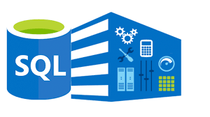

Skills

Python
- Well versed with libraries:
- Numpy
- Fundamental package for numerical computing. Provides support for arrays, matrices, and a variety of mathematical functions.
- Pandas
- Data manipulation and analysis library. It provides data structures like DataFrames for handling structured data.
- Matplotlib
- 2D plotting library for data visualization. It provides functions to create a wide range of static, animated, and interactive plots.
- Seaborn
- Built on top of Matplotlib, Seaborn provides a high-level interface for drawing attractive statistical graphics.
- Scikit-learn
- A machine learning library that provides simple and efficient tools for data mining and data analysis.
- TensorFlow
- It provides tools for building machine learning and neural network models.
- NLTK
- A library for working with human language data (text).
- Langchain Framework
- LangChain is a framework designed for building applications with large language models (LLMs)
- HuggingFace Platform
- Huggingface platform designed for NLP and machine learning with collection of pre-trained models, datasets, and tools for AI development.
- Ollama Platform
- Ollama is a platform and toolkit designed to run Large Language Models (LLMs) locally on your system,offering more control over data privacy and security
Data Visualization

- Powerbi
- Using PowerBi to connect to multiple data sources,data cleaning and pre-processing,perform data modelling and data analysis.Familarity using DAX Queries and Measures.Sharing and Collaboration of PowerBI,DataFlows and Integration with PowerAutomate
- Knime
- Using Knime for Data pre-processing & Wrangling ,Text Mining, Machine Learning & predictive Modeling such as Supervised/Unsupervised learning,Deep Learning and Model Evaluation

SQL
- Database Design and Management
- Proficient in creating and managing relational database schemas, tables and views.
- Advanced SQL Queries
- Skilled in writing complex queries that include joins (INNER, LEFT, RIGHT, FULL). I can efficiently extract and analyze data from multiple tables, ensuring performance and clarity
- Data Manipulation
- Expertise in performing CRUD operations (Create, Read, Update, Delete) on large datasets. I am proficient in utilizing SQL commands such as INSERT, UPDATE, DELETE, and SELECT to manipulate and manage data accurately.
- Data Aggregation and Reporting
- Proficient in using SQL aggregate functions (e.g., COUNT, SUM, AVG, MIN, MAX) to analyze and summarize large datasets

Data Storytelling
- Data Visualization
- Proficient in creating compelling and intuitive data visualizations using tools like Power BI and KNIME
- Contextualizing Data
- I have a deep understanding of how to provide context to raw data,I ensure that the narrative aligns with business goals and speaks to the audience's needs.
- Simplifying Complex Information
- With my experience in working with intricate datasets (including machine learning models and AI-driven insights), I specialize in breaking down complex technical data into digestible, relatable insights. I leverage storytelling techniques to convey intricate analyses in a straightforward and engaging manner, making data accessible for stakeholders at all levels..
- Creating Actionable Insights
- I focus on connecting data points to business challenges, enabling decision-makers to take informed actions.
- Tailored Messaging for Diverse Audiences
- From technical teams to senior executives, I craft tailored data stories that resonate with diverse audiences. I adapt my communication style based on the audience’s familiarity with the data, ensuring that key messages are both understood and impactful..
- Integration of Advanced Analytics
- Leveraging my expertise in machine learning and AI, I incorporate predictive analytics, classification models, and trend forecasting into my data stories
- Clear and Engaging Presentations
- Delivering presentations that provide data insights, providing a coherent and engaging story.